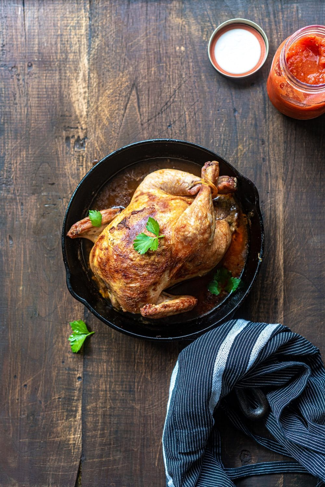
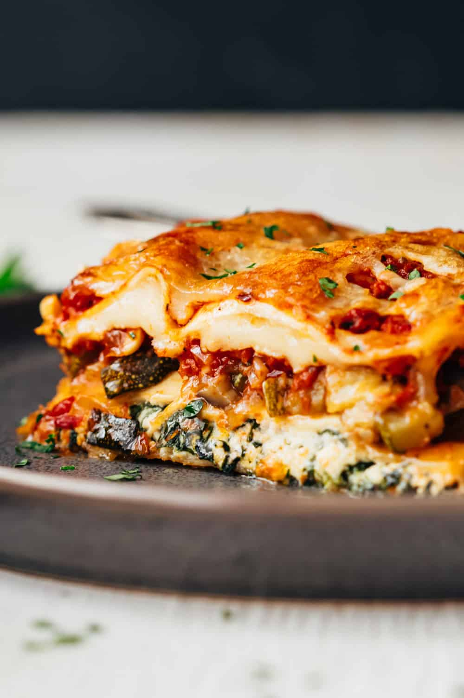
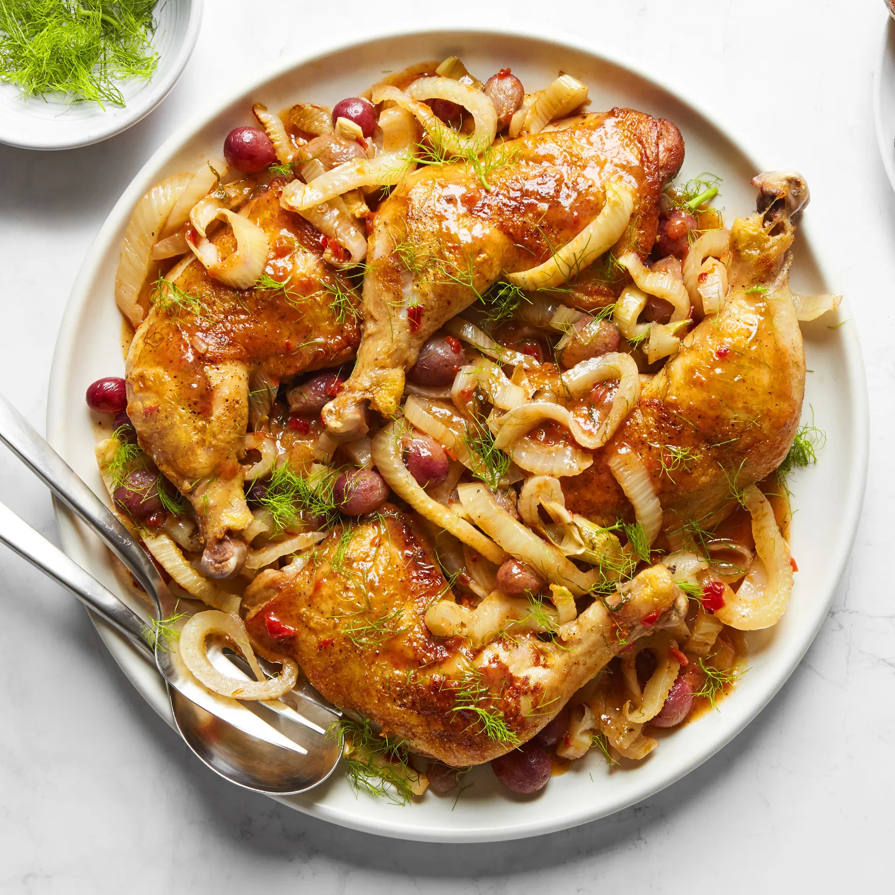

Main Courses
Discover our collection of satisfying main dishes.
Roast Chicken

Ingredients:
- 1 whole chicken (about 4-5 pounds)
- 2 tablespoons olive oil
- 1 tablespoon melted butter
- 2 cloves garlic, minced
- 1 teaspoon dried thyme
- 1 teaspoon dried rosemary
- 1 teaspoon dried sage
- Salt and pepper to taste
Instructions:
- Preheat the oven: Preheat your oven to 425°F (220°C).
- Prepare the chicken: Remove any giblets from the chicken cavity and pat the chicken dry with paper towels. Place the chicken on a rack in a roasting pan.
- Mix the seasoning: In a small bowl, mix together the olive oil, melted butter, minced garlic, dried thyme, dried rosemary, dried sage, salt, and pepper.
- Season the chicken: Rub the seasoning mixture all over the outside of the chicken, making sure to coat it evenly.
- Roast the chicken: Place the roasting pan in the preheated oven and roast the chicken for about 1 hour to 1 hour 15 minutes, or until the internal temperature reaches 165°F (75°C) and the juices run clear. Baste the chicken with the pan juices halfway through cooking.
- Rest and serve: Once the chicken is done, remove it from the oven and let it rest for about 10 minutes before carving. Serve the roast chicken with your favorite side dishes and enjoy!
Vegetarian Lasagna

Ingredients:
- 9 lasagna noodles
- 2 cups marinara sauce
- 1 cup ricotta cheese
- 1 cup shredded mozzarella cheese
- 1 cup grated Parmesan cheese
- 1 tablespoon olive oil
- 1 small onion, chopped
- 2 cloves garlic, minced
- 1 bell pepper, diced
- 1 zucchini, diced
- 1 cup sliced mushrooms
- 1 teaspoon dried oregano
- 1 teaspoon dried basil
- Salt and pepper to taste
Instructions:
- Preheat the oven: Preheat your oven to 375°F (190°C).
- Cook the lasagna noodles: Cook the lasagna noodles according to the package instructions until al dente. Drain and set aside.
- Prepare the vegetables: In a large skillet, heat olive oil over medium heat. Add the chopped onion, minced garlic, diced bell pepper, diced zucchini, and sliced mushrooms. Cook until the vegetables are softened, about 5-7 minutes.
- Season the vegetables: Season the cooked vegetables with dried oregano, dried basil, salt, and pepper. Stir to combine.
- Assemble the lasagna: Spread a thin layer of marinara sauce in the bottom of a 9x13-inch baking dish. Place 3 lasagna noodles on top. Spread half of the ricotta cheese over the noodles, followed by half of the cooked vegetables. Sprinkle with a third of the mozzarella cheese and a third of the Parmesan cheese. Repeat the layers with the remaining ingredients, ending with a layer of marinara sauce and the remaining cheeses on top.
- Bake the lasagna: Cover the baking dish with foil and bake in the preheated oven for 25-30 minutes. Then, remove the foil and bake for an additional 10-15 minutes, or until the cheese is melted and bubbly.
- Cool and serve: Remove the lasagna from the oven and let it cool for a few minutes before slicing and serving. Enjoy your delicious vegetarian lasagna!
Braised Chicken Legs With Grapes and Funnel

Ingredients:
- 4 chicken legs
- 1 tablespoon olive oil
- Salt and pepper to taste
- 1 fennel bulb, thinly sliced
- 1 cup seedless grapes, halved
- 2 cloves garlic, minced
- 1 cup chicken broth
- 1/2 cup white wine (optional)
- 1 tablespoon fresh thyme leaves
- 1 tablespoon honey
- Zest of 1 lemon
- Juice of 1/2 lemon
Instructions:
- Preheat the oven: Preheat your oven to 375°F (190°C).
- Season the chicken: Season the chicken legs generously with salt and pepper.
- Sear the chicken: Heat olive oil in a large oven-safe skillet over medium-high heat. Add the chicken legs to the skillet and sear until golden brown on both sides, about 4-5 minutes per side. Remove the chicken legs from the skillet and set them aside.
- Cook the fennel and garlic: In the same skillet, add the sliced fennel and cook for 3-4 minutes until it starts to soften. Add the minced garlic and cook for another minute until fragrant.
- Add the grapes and deglaze: Add the halved grapes to the skillet with the fennel and garlic. Stir everything together, scraping up any browned bits from the bottom of the skillet. If using, pour in the white wine to deglaze the pan, stirring and allowing it to reduce slightly.
- Combine the ingredients: Return the chicken legs to the skillet, nestling them amongst the fennel and grapes. Pour in the chicken broth, add the fresh thyme leaves, honey, lemon zest, and lemon juice. Stir gently to combine.
- Braise in the oven: Transfer the skillet to the preheated oven and bake uncovered for 30-35 minutes, or until the chicken is cooked through and the juices run clear. The internal temperature of the chicken should reach 165°F (75°C).
- Serve: Once the chicken is done, remove the skillet from the oven. Let it cool for a few minutes before serving. You can garnish with additional thyme leaves and lemon zest if desired.
- Enjoy: Serve the braised chicken legs with grapes and fennel alongside your favorite side dishes like rice, mashed potatoes, or a simple green salad. Enjoy your delicious meal!